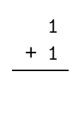
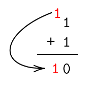
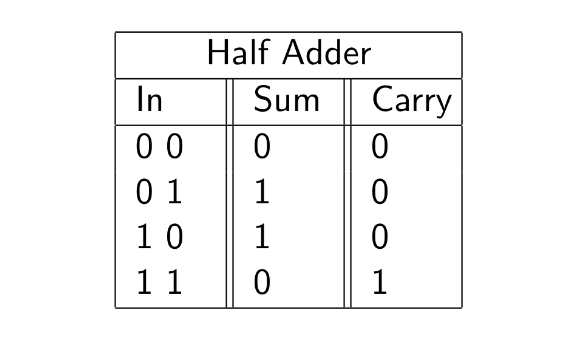
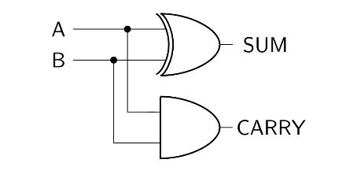

If we ultimately want to be able to add any binary number together, we've got to start somewhere simple.
Let's start with the simplest general addition operation you could ever perform with binary. In other words, let's see if we can design a circuit that can add two single-digit binary numbers.
First things first, how would you go about doing this?
In terms of representing two single-digit binary numbers- we're in luck. In the previous chapter, we represented input signals with redstone wire. Here, we'll be doing just the same. A redstone wire in the 'on' state will represent a 1, while a redstone wire in the 'off' state will represent a 0.
Following that line of thinking, we can understand that if we're to add two single-digit binary numbers, we're going to need two redstone wires coming into our 'adder' circuit.
At first glance, one may incorrectly claim that we only require one output to display the sum of the two single-digit binary numbers that we will be adding. However, if you consider the full range of possibilities when adding two single-digit binary numbers, you'll quickly discover that this assumption is foolhardy.
Let's consider some examples.
Suppose we wanted to add 1 and 0. The answer is quite simple, it's 1.
Now suppose we wanted to add 0 and 0. The answer here is also simple- we'd just have 0.
However, let's say we wanted to add 1 and 1. Knowing the nuances of binary, we can say that the result will be 10. What would our circuit's result be, then? If we have a single output wire, there's no way we can represent 10.
This is the fundamental argument as to why we need two output wires. We'll label one of them 'sum', to represent the sum of the two values, and the other one 'carry', to represent the literal 'carryover' that occurs when adding 1 and 1.
Here's another way to look at it- suppose this picture represents our addition of 1 and 1:
Below is the result, after performing the addition.
After we perform the addition, we end up with a 'carry' value. This is the sort of value we will want to be storing in our 'carry' output bit.
Now we know our inputs, and we know our possible outputs. Consider the fact that we are working with two inputs that can either be one or two. Knowing this, and using the knowledge of logic gates we established in the previous section, let's build our addition circuit by leveraging those.
A good place to start is a truth table. In order to establish a truth table for our single-digit addition circuit, all we need to do is list out all the possibilities. In the truth table below, I've labelled the 'sum' bit and the 'carry' bit for our convenience.
Now that we can clearly see the truth table in front of us, we can try and put together a combination of the basic logic gates that will produce the outputs that we want.
Let's do exactly that. It helps to isolate both the output bits and see what they need to be. Upon closer inspection, it appears that the 'sum' bit could be determined with an XOR gate, and the 'carry' bit could be determined with an AND gate.
Believe it or not, that's all we need! Here's the (simple) circuit that satisfies that truth table.
And that's that! We now have a reliable circuit that can add two one-digit binary numbers (A and B), and produce a sum and a carry bit.